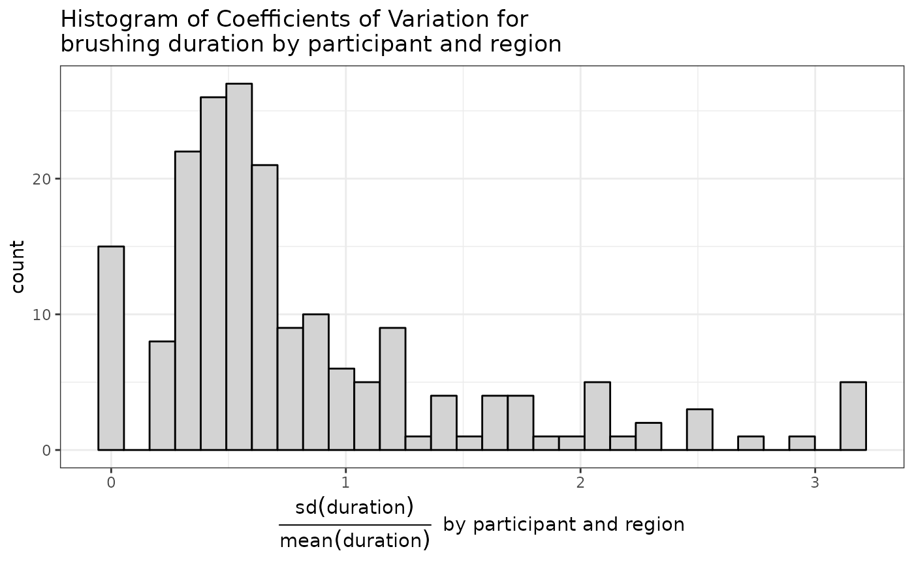
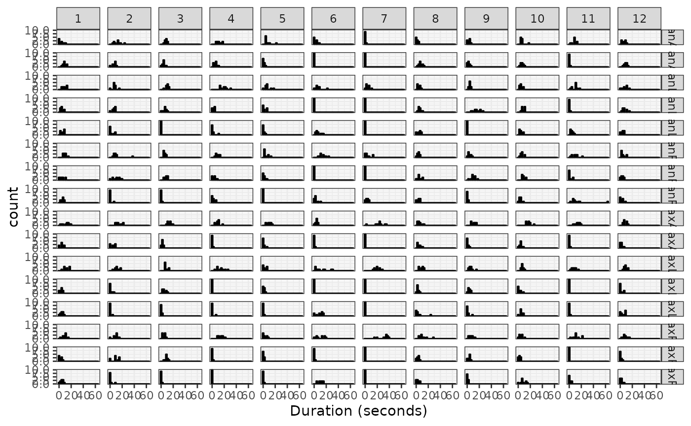

Objective
We want to analyze variations in the amount of time spent brushing each dental region, session-to-session and among participants.
In particular, we want to know whether the participants spent more time brushing their lower teeth than upper teeth, left versus right, and inner (lingual) versus outer (buccal) surfaces.
Model for brushing duration per region
Here we fit a zero-inflated negative binomial regression model for the amount of time (measured in counts of 25 Hz samples) spent brushing each region, with a log-link for the count submodel and a logistic link for the zero-inflation submodel. Both submodels had fixed effects for tooth surface, mouth side, and jaw, and random effects on the intercept by session nested in participant, to account for person-to-person and session-to-session variability in overall brushing duration. The count submodel also included participant-specific random effects for tooth surface, mouth side, and jaw. We attempted to add participant-specific random effects for tooth surface, mouth side, and jaw in the zero-inflation submodel, but the estimation algorithm failed to converge for that extended model.
The AIC for this model was 18,598.76, which was 69,183.57 less than a zero-inflated Poisson model with the same fixed and random effects. The BIC for this model was 18,865.64, which was 69,116.85 less than the zero-inflated Poisson model with the same fixed and random effects.
Parameter estimates:
## Cannot compute standard errors and confidence intervals for random
## effects parameters.
## Your model may suffer from singularity (see '?lme4::isSingular' and
## '?performance::check_singularity').
# Fixed Effects (Count Model)
| (Intercept) |
5.33 |
0.11 |
(5.12, 5.54) |
< .001 |
| Surface [Lingual] |
-0.78 |
0.22 |
(-1.21, -0.35) |
< .001 |
| Surface [Occlusal] |
-0.80 |
0.16 |
(-1.13, -0.48) |
< .001 |
| Side [Anterior] |
-0.01 |
0.09 |
(-0.19, 0.17) |
0.891 |
| Side [Left] |
-3.30e-03 |
0.08 |
(-0.15, 0.15) |
0.966 |
| Jaw [Maxillar] |
0.09 |
0.14 |
(-0.18, 0.37) |
0.508 |
# Fixed Effects (Zero-Inflated Model)
| (Intercept) |
-4.25 |
0.43 |
(-5.09, -3.41) |
< .001 |
| Surface [Lingual] |
3.04 |
0.23 |
(2.59, 3.49) |
< .001 |
| Surface [Occlusal] |
3.47 |
0.25 |
(2.98, 3.96) |
< .001 |
| Side [Anterior] |
0.17 |
0.19 |
(-0.20, 0.53) |
0.364 |
| Side [Left] |
0.13 |
0.14 |
(-0.16, 0.41) |
0.381 |
| Jaw [Maxillar] |
0.68 |
0.13 |
(0.42, 0.94) |
< .001 |
# Dispersion
| Participant1 |
1.23 |
0.12 |
(1.00, 1.46) |
< .001 |
| Participant2 |
1.55 |
0.14 |
(1.29, 1.82) |
< .001 |
| Participant3 |
1.16 |
0.13 |
(0.91, 1.40) |
< .001 |
| Participant4 |
0.84 |
0.14 |
(0.58, 1.11) |
< .001 |
| Participant5 |
0.64 |
0.13 |
(0.38, 0.90) |
< .001 |
| Participant6 |
0.74 |
0.16 |
(0.43, 1.05) |
< .001 |
| Participant7 |
1.05 |
0.19 |
(0.68, 1.43) |
< .001 |
| Participant8 |
0.77 |
0.12 |
(0.54, 1.00) |
< .001 |
| Participant9 |
0.56 |
0.12 |
(0.31, 0.80) |
< .001 |
| Participant10 |
0.98 |
0.11 |
(0.75, 1.20) |
< .001 |
| Participant11 |
0.72 |
0.14 |
(0.44, 0.99) |
< .001 |
| Participant12 |
0.94 |
0.12 |
(0.70, 1.18) |
< .001 |
# Random Effects Variances
| SD (Intercept: Participant) |
0.34 |
| SD (Intercept: Participant:Session) |
8.18e-05 |
| SD (SurfaceLingual: Participant) |
0.68 |
| SD (SurfaceOcclusal: Participant) |
0.54 |
| SD (JawMaxillar: Participant) |
0.47 |
| SD (SideAnterior: Participant) |
0.26 |
| SD (SideLeft: Participant) |
0.22 |
| Cor (Intercept~SurfaceLingual: Participant) |
-0.47 |
| Cor (Intercept~SurfaceOcclusal: Participant) |
0.02 |
| Cor (Intercept~JawMaxillar: Participant) |
-0.28 |
| Cor (Intercept~SideAnterior: Participant) |
-0.24 |
| Cor (Intercept~SideLeft: Participant) |
-0.63 |
| Cor (SurfaceLingual~JawMaxillar: Participant) |
-0.27 |
| Cor (SurfaceOcclusal~JawMaxillar: Participant) |
0.24 |
| Cor (SurfaceLingual~SideAnterior: Participant) |
0.53 |
| Cor (SurfaceOcclusal~SideAnterior: Participant) |
-0.21 |
| Cor (JawMaxillar~SideAnterior: Participant) |
-0.66 |
| Cor (SurfaceLingual~SideLeft: Participant) |
0.56 |
| Cor (SurfaceOcclusal~SideLeft: Participant) |
-0.34 |
| Cor (JawMaxillar~SideLeft: Participant) |
-0.41 |
| Cor (SideAnterior~SideLeft: Participant) |
0.61 |
| Cor (SurfaceLingual~SurfaceOcclusal: Participant) |
-0.03 |
# Random Effects (Zero-Inflated Model)
| SD (Intercept: Session:Participant) |
0.12 |
| SD (Intercept: Participant) |
1.20 |
Estimates of participant-level random effects for count submodel:
| 1 |
(Intercept) |
0.132 |
0.141 |
0.347 |
-0.143 |
0.408 |
| 2 |
(Intercept) |
0.363 |
0.140 |
0.010 |
0.087 |
0.638 |
| 3 |
(Intercept) |
-0.008 |
0.152 |
0.958 |
-0.306 |
0.290 |
| 4 |
(Intercept) |
0.506 |
0.167 |
0.003 |
0.178 |
0.834 |
| 5 |
(Intercept) |
-0.305 |
0.181 |
0.091 |
-0.660 |
0.049 |
| 6 |
(Intercept) |
0.091 |
0.166 |
0.584 |
-0.234 |
0.416 |
| 7 |
(Intercept) |
-0.225 |
0.206 |
0.275 |
-0.629 |
0.179 |
| 8 |
(Intercept) |
-0.273 |
0.162 |
0.092 |
-0.589 |
0.044 |
| 9 |
(Intercept) |
-0.473 |
0.177 |
0.007 |
-0.820 |
-0.127 |
| 10 |
(Intercept) |
-0.114 |
0.155 |
0.459 |
-0.417 |
0.188 |
| 11 |
(Intercept) |
0.496 |
0.185 |
0.007 |
0.134 |
0.858 |
| 12 |
(Intercept) |
-0.267 |
0.158 |
0.091 |
-0.575 |
0.042 |
| 1 |
SurfaceLingual |
0.188 |
0.239 |
0.431 |
-0.280 |
0.657 |
| 2 |
SurfaceLingual |
0.498 |
0.236 |
0.034 |
0.037 |
0.960 |
| 3 |
SurfaceLingual |
0.401 |
0.240 |
0.095 |
-0.070 |
0.872 |
| 4 |
SurfaceLingual |
-0.593 |
0.264 |
0.025 |
-1.110 |
-0.076 |
| 5 |
SurfaceLingual |
-0.276 |
0.257 |
0.282 |
-0.779 |
0.227 |
| 6 |
SurfaceLingual |
-0.794 |
0.425 |
0.061 |
-1.627 |
0.038 |
| 7 |
SurfaceLingual |
-0.951 |
0.869 |
0.274 |
-2.654 |
0.752 |
| 8 |
SurfaceLingual |
0.547 |
0.251 |
0.029 |
0.055 |
1.039 |
| 9 |
SurfaceLingual |
0.940 |
0.262 |
<0.001 |
0.426 |
1.453 |
| 10 |
SurfaceLingual |
0.496 |
0.245 |
0.043 |
0.016 |
0.975 |
| 11 |
SurfaceLingual |
-1.015 |
0.304 |
0.001 |
-1.610 |
-0.420 |
| 12 |
SurfaceLingual |
0.504 |
0.249 |
0.043 |
0.015 |
0.992 |
| 1 |
SurfaceOcclusal |
0.312 |
0.194 |
0.108 |
-0.069 |
0.693 |
| 2 |
SurfaceOcclusal |
0.091 |
0.225 |
0.686 |
-0.350 |
0.533 |
| 3 |
SurfaceOcclusal |
-0.996 |
0.257 |
<0.001 |
-1.499 |
-0.492 |
| 4 |
SurfaceOcclusal |
-0.545 |
0.253 |
0.032 |
-1.042 |
-0.048 |
| 5 |
SurfaceOcclusal |
-0.823 |
0.259 |
0.001 |
-1.332 |
-0.315 |
| 6 |
SurfaceOcclusal |
0.567 |
0.218 |
0.009 |
0.140 |
0.994 |
| 7 |
SurfaceOcclusal |
0.109 |
0.297 |
0.714 |
-0.474 |
0.692 |
| 8 |
SurfaceOcclusal |
0.390 |
0.214 |
0.068 |
-0.029 |
0.809 |
| 9 |
SurfaceOcclusal |
-0.311 |
0.259 |
0.229 |
-0.818 |
0.196 |
| 10 |
SurfaceOcclusal |
0.569 |
0.208 |
0.006 |
0.161 |
0.977 |
| 11 |
SurfaceOcclusal |
0.301 |
0.236 |
0.201 |
-0.161 |
0.764 |
| 12 |
SurfaceOcclusal |
0.266 |
0.209 |
0.204 |
-0.144 |
0.677 |
| 1 |
JawMaxillar |
-0.148 |
0.164 |
0.365 |
-0.469 |
0.172 |
| 2 |
JawMaxillar |
-0.046 |
0.164 |
0.780 |
-0.366 |
0.275 |
| 3 |
JawMaxillar |
-0.085 |
0.168 |
0.615 |
-0.414 |
0.245 |
| 4 |
JawMaxillar |
-0.340 |
0.193 |
0.079 |
-0.719 |
0.039 |
| 5 |
JawMaxillar |
-0.476 |
0.193 |
0.014 |
-0.854 |
-0.097 |
| 6 |
JawMaxillar |
0.190 |
0.195 |
0.330 |
-0.192 |
0.573 |
| 7 |
JawMaxillar |
1.404 |
0.236 |
<0.001 |
0.941 |
1.866 |
| 8 |
JawMaxillar |
-0.033 |
0.177 |
0.850 |
-0.380 |
0.313 |
| 9 |
JawMaxillar |
0.001 |
0.198 |
0.996 |
-0.387 |
0.389 |
| 10 |
JawMaxillar |
-0.097 |
0.172 |
0.571 |
-0.434 |
0.240 |
| 11 |
JawMaxillar |
-0.264 |
0.212 |
0.212 |
-0.679 |
0.150 |
| 12 |
JawMaxillar |
-0.107 |
0.177 |
0.544 |
-0.453 |
0.239 |
| 1 |
SideAnterior |
0.177 |
0.139 |
0.203 |
-0.095 |
0.449 |
| 2 |
SideAnterior |
-0.031 |
0.130 |
0.813 |
-0.285 |
0.223 |
| 3 |
SideAnterior |
-0.009 |
0.143 |
0.951 |
-0.289 |
0.271 |
| 4 |
SideAnterior |
0.020 |
0.162 |
0.901 |
-0.297 |
0.338 |
| 5 |
SideAnterior |
0.335 |
0.186 |
0.072 |
-0.030 |
0.699 |
| 6 |
SideAnterior |
-0.426 |
0.271 |
0.116 |
-0.958 |
0.105 |
| 7 |
SideAnterior |
-0.464 |
0.230 |
0.043 |
-0.914 |
-0.014 |
| 8 |
SideAnterior |
0.024 |
0.148 |
0.872 |
-0.265 |
0.313 |
| 9 |
SideAnterior |
0.088 |
0.168 |
0.599 |
-0.241 |
0.418 |
| 10 |
SideAnterior |
0.237 |
0.151 |
0.118 |
-0.060 |
0.533 |
| 11 |
SideAnterior |
-0.116 |
0.184 |
0.529 |
-0.477 |
0.245 |
| 12 |
SideAnterior |
0.170 |
0.148 |
0.248 |
-0.119 |
0.460 |
| 1 |
SideLeft |
-0.009 |
0.112 |
0.934 |
-0.229 |
0.210 |
| 2 |
SideLeft |
-0.204 |
0.120 |
0.090 |
-0.439 |
0.032 |
| 3 |
SideLeft |
0.086 |
0.125 |
0.489 |
-0.159 |
0.331 |
| 4 |
SideLeft |
-0.034 |
0.149 |
0.817 |
-0.326 |
0.257 |
| 5 |
SideLeft |
0.293 |
0.158 |
0.065 |
-0.018 |
0.603 |
| 6 |
SideLeft |
-0.074 |
0.154 |
0.631 |
-0.375 |
0.227 |
| 7 |
SideLeft |
-0.313 |
0.200 |
0.118 |
-0.705 |
0.080 |
| 8 |
SideLeft |
0.091 |
0.122 |
0.458 |
-0.148 |
0.329 |
| 9 |
SideLeft |
0.290 |
0.134 |
0.030 |
0.028 |
0.552 |
| 10 |
SideLeft |
-0.025 |
0.120 |
0.836 |
-0.261 |
0.211 |
| 11 |
SideLeft |
-0.321 |
0.171 |
0.061 |
-0.657 |
0.015 |
| 12 |
SideLeft |
0.249 |
0.137 |
0.068 |
-0.019 |
0.518 |
Estimates of participant-level random effects for zero-inflation submodel:
| 1 |
(Intercept) |
-1.467 |
0.449 |
0.001 |
-2.347 |
-0.587 |
| 2 |
(Intercept) |
0.430 |
0.396 |
0.278 |
-0.347 |
1.207 |
| 3 |
(Intercept) |
-0.306 |
0.405 |
0.450 |
-1.101 |
0.488 |
| 4 |
(Intercept) |
0.541 |
0.396 |
0.172 |
-0.235 |
1.318 |
| 5 |
(Intercept) |
0.151 |
0.399 |
0.704 |
-0.631 |
0.933 |
| 6 |
(Intercept) |
1.162 |
0.397 |
0.003 |
0.385 |
1.939 |
| 7 |
(Intercept) |
2.496 |
0.414 |
<0.001 |
1.684 |
3.308 |
| 8 |
(Intercept) |
-1.389 |
0.445 |
0.002 |
-2.261 |
-0.516 |
| 9 |
(Intercept) |
-0.091 |
0.402 |
0.821 |
-0.879 |
0.697 |
| 10 |
(Intercept) |
-1.765 |
0.471 |
<0.001 |
-2.688 |
-0.842 |
| 11 |
(Intercept) |
0.796 |
0.396 |
0.044 |
0.021 |
1.572 |
| 12 |
(Intercept) |
-0.399 |
0.407 |
0.327 |
-1.197 |
0.399 |
Coefficients of variation by participant and region
## `summarise()` has grouped output by 'Participant'. You can override using the
## `.groups` argument.
| 1 |
1.07 |
0.328 |
0.399 |
0.503 |
0.443 |
0.291 |
0.735 |
0.355 |
0.465 |
0.575 |
0.377 |
0.714 |
0.583 |
0.384 |
1 |
0.518 |
| 2 |
0.468 |
0.437 |
0.482 |
0.456 |
1.44 |
0.88 |
0.622 |
2.89 |
0.383 |
0.77 |
0.37 |
1.79 |
3.16 |
0.449 |
0.611 |
2.5 |
| 3 |
0.275 |
0.562 |
0.242 |
0.5 |
2.11 |
0.3 |
0.346 |
2.54 |
0.254 |
0.579 |
0.302 |
0.583 |
1.92 |
0.441 |
0.261 |
1.81 |
| 4 |
0.337 |
0.554 |
0.284 |
0.663 |
2.04 |
0.391 |
0.845 |
1.25 |
0.409 |
1.46 |
0.493 |
2.11 |
2.74 |
0.31 |
3.16 |
0 |
| 5 |
0.686 |
1.15 |
0.669 |
1.1 |
1.24 |
0.813 |
1.03 |
0 |
0.326 |
1.22 |
0.891 |
0.994 |
1.48 |
0.995 |
1.09 |
0.835 |
| 6 |
1.16 |
2.11 |
0.83 |
0 |
0.61 |
0.399 |
0 |
1.3 |
0.495 |
3.16 |
0.907 |
0 |
0.639 |
0.718 |
3.16 |
0.376 |
| 7 |
2.25 |
0 |
0.721 |
0 |
0 |
1.19 |
3.16 |
0.688 |
0.397 |
0 |
0.214 |
0 |
0 |
0.249 |
0 |
0 |
| 8 |
0.981 |
0.473 |
0.567 |
0.403 |
0.568 |
0.552 |
0.58 |
0.699 |
0.616 |
0.554 |
0.394 |
0.574 |
1.64 |
0.667 |
0.645 |
0.912 |
| 9 |
0.839 |
0.86 |
0.4 |
0.382 |
1.67 |
0.635 |
0.414 |
1.37 |
0.336 |
1.75 |
0.6 |
0.636 |
2.28 |
0.544 |
0.496 |
1.42 |
| 10 |
0.544 |
0.394 |
0.474 |
0.263 |
0.68 |
0.473 |
0.266 |
0.622 |
0.204 |
0.593 |
0.3 |
1.2 |
0.508 |
0.663 |
0.745 |
0.543 |
| 11 |
0.373 |
2.48 |
0.46 |
1.66 |
0.506 |
0.524 |
1.63 |
1.2 |
0.278 |
2.06 |
0.518 |
0 |
2.18 |
0.519 |
0 |
1.18 |
| 12 |
0.61 |
0.286 |
0.609 |
0.47 |
0.751 |
0.71 |
0.671 |
0.979 |
0.37 |
1.09 |
0.33 |
1.76 |
0.911 |
0.466 |
1.76 |
1.05 |
## `stat_bin()` using `bins = 30`. Pick better value with `binwidth`.

Histograms of brushing durations by participant and region
## `stat_bin()` using `bins = 30`. Pick better value with `binwidth`.

Brushing duration with excessive pressure
Again, we fit a zero-inflated negative binomial model; both the zero-inflation and count submodels include fixed effects for tooth surface, side, and jaw, and random effects on the intercept by participant and session. An extended model with participant-level random effects on tooth surface, side, and jaw failed to converge.
The AIC for this model was 1,252.154, which was 274.6046 less than a zero-inflated Poisson model with the same fixed and random effects. The BIC for this model was 1,346.675, which was 269.0445 less than the zero-inflated Poisson model with the same fixed and random effects.
Parameter Estimates
# Fixed Effects (Count Model)
| (Intercept) |
2.12 |
0.30 |
(1.53, 2.71) |
< .001 |
| Surface [Lingual] |
0.01 |
0.29 |
(-0.56, 0.58) |
0.971 |
| Surface [Occlusal] |
0.54 |
0.22 |
(0.10, 0.98) |
0.015 |
| Side [Anterior] |
0.04 |
0.32 |
(-0.58, 0.66) |
0.889 |
| Side [Left] |
-0.04 |
0.20 |
(-0.44, 0.37) |
0.862 |
| Jaw [Maxillar] |
-0.10 |
0.21 |
(-0.51, 0.30) |
0.612 |
# Fixed Effects (Zero-Inflated Model)
| (Intercept) |
4.87 |
0.93 |
(3.04, 6.69) |
< .001 |
| Surface [Lingual] |
0.93 |
0.34 |
(0.27, 1.60) |
0.006 |
| Surface [Occlusal] |
-1.01 |
0.29 |
(-1.59, -0.44) |
< .001 |
| Side [Anterior] |
-0.20 |
0.37 |
(-0.93, 0.52) |
0.583 |
| Side [Left] |
-0.38 |
0.27 |
(-0.91, 0.14) |
0.151 |
| Jaw [Maxillar] |
0.59 |
0.24 |
(0.11, 1.07) |
0.016 |
# Random Effects Variances
| SD (Intercept: Session:Participant) |
0.27 |
(0.08, 0.87) |
| SD (Intercept: Participant) |
0.38 |
(0.16, 0.92) |
| SD (Residual) |
2.06 |
(1.30, 3.27) |
# Random Effects (Zero-Inflated Model)
| SD (Intercept: Session:Participant) |
0.69 |
(0.40, 1.19) |
| SD (Intercept: Participant) |
2.39 |
(1.25, 4.57) |
Estimates of participant-level random effects for count submodel:
| 1 |
(Intercept) |
0.289 |
0.232 |
0.213 |
-0.166 |
0.743 |
| 2 |
(Intercept) |
-0.002 |
0.380 |
0.996 |
-0.747 |
0.743 |
| 3 |
(Intercept) |
-0.002 |
0.380 |
0.996 |
-0.747 |
0.743 |
| 4 |
(Intercept) |
-0.002 |
0.380 |
0.996 |
-0.747 |
0.743 |
| 5 |
(Intercept) |
-0.158 |
0.302 |
0.600 |
-0.750 |
0.434 |
| 6 |
(Intercept) |
-0.599 |
0.349 |
0.086 |
-1.283 |
0.084 |
| 7 |
(Intercept) |
-0.002 |
0.380 |
0.996 |
-0.747 |
0.743 |
| 8 |
(Intercept) |
0.206 |
0.346 |
0.552 |
-0.473 |
0.885 |
| 9 |
(Intercept) |
-0.002 |
0.380 |
0.996 |
-0.747 |
0.743 |
| 10 |
(Intercept) |
-0.080 |
0.254 |
0.753 |
-0.578 |
0.418 |
| 11 |
(Intercept) |
0.277 |
0.254 |
0.276 |
-0.221 |
0.775 |
| 12 |
(Intercept) |
-0.022 |
0.324 |
0.947 |
-0.656 |
0.613 |
Estimates of participant-level random effects for zero-inflation submodel:
| 1 |
(Intercept) |
-3.737 |
0.938 |
<0.001 |
-5.576 |
-1.898 |
| 2 |
(Intercept) |
1.594 |
1.576 |
0.312 |
-1.494 |
4.682 |
| 3 |
(Intercept) |
1.594 |
1.576 |
0.312 |
-1.494 |
4.682 |
| 4 |
(Intercept) |
1.594 |
1.576 |
0.312 |
-1.494 |
4.682 |
| 5 |
(Intercept) |
-1.269 |
1.002 |
0.205 |
-3.233 |
0.695 |
| 6 |
(Intercept) |
-2.172 |
0.963 |
0.024 |
-4.060 |
-0.284 |
| 7 |
(Intercept) |
1.594 |
1.576 |
0.312 |
-1.494 |
4.682 |
| 8 |
(Intercept) |
-0.329 |
1.089 |
0.763 |
-2.463 |
1.805 |
| 9 |
(Intercept) |
1.594 |
1.576 |
0.312 |
-1.494 |
4.682 |
| 10 |
(Intercept) |
-2.207 |
0.956 |
0.021 |
-4.082 |
-0.333 |
| 11 |
(Intercept) |
-2.842 |
0.944 |
0.003 |
-4.693 |
-0.992 |
| 12 |
(Intercept) |
-0.717 |
1.044 |
0.492 |
-2.762 |
1.328 |
Total duration of brushing
Here we fit a negative binomial regression model for the total duration of each brushing session (again measured in counts of 25 Hz samples), with a log-link, random intercepts by participant, and person-specific dispersion parameters (modeled as fixed effects due to the limitations of the modeling package).
The AIC for this model was 1,802.112, which was 8,098.558 less than a zero-inflated Poisson model with the same fixed and random effects. The BIC for this model was 1,841.137, which was 8,065.108 less than the zero-inflated Poisson model with the same fixed and random effects.
Parameter estimates
# Fixed Effects
| (Intercept) |
7.71 |
0.04 |
(7.63, 7.79) |
< .001 |
# Dispersion
| Participant1 |
5.34 |
0.51 |
(4.34, 6.34) |
< .001 |
| Participant2 |
3.95 |
0.49 |
(3.00, 4.91) |
< .001 |
| Participant3 |
4.32 |
0.48 |
(3.37, 5.26) |
< .001 |
| Participant4 |
3.78 |
0.47 |
(2.86, 4.71) |
< .001 |
| Participant5 |
0.97 |
0.52 |
(-0.05, 1.99) |
0.064 |
| Participant6 |
2.97 |
0.47 |
(2.06, 3.89) |
< .001 |
| Participant7 |
4.10 |
0.48 |
(3.17, 5.04) |
< .001 |
| Participant8 |
3.19 |
0.47 |
(2.27, 4.10) |
< .001 |
| Participant9 |
2.21 |
0.46 |
(1.30, 3.12) |
< .001 |
| Participant10 |
5.24 |
0.51 |
(4.24, 6.23) |
< .001 |
| Participant11 |
3.68 |
0.47 |
(2.76, 4.60) |
< .001 |
| Participant12 |
2.86 |
0.46 |
(1.95, 3.77) |
< .001 |
# Random Effects Variances
| SD (Intercept: Participant) |
0.12 |
(0.06, 0.22) |
Estimates of participant-level random effects:
| 1 |
(Intercept) |
0.172 |
0.048 |
<0.001 |
0.078 |
0.266 |
| 2 |
(Intercept) |
0.185 |
0.061 |
0.003 |
0.065 |
0.305 |
| 3 |
(Intercept) |
-0.021 |
0.052 |
0.684 |
-0.123 |
0.081 |
| 4 |
(Intercept) |
0.045 |
0.059 |
0.438 |
-0.069 |
0.160 |
| 5 |
(Intercept) |
-0.145 |
0.154 |
0.346 |
-0.446 |
0.156 |
| 6 |
(Intercept) |
-0.085 |
0.069 |
0.222 |
-0.220 |
0.051 |
| 7 |
(Intercept) |
-0.028 |
0.054 |
0.604 |
-0.133 |
0.078 |
| 8 |
(Intercept) |
-0.064 |
0.065 |
0.322 |
-0.192 |
0.063 |
| 9 |
(Intercept) |
-0.095 |
0.088 |
0.277 |
-0.267 |
0.076 |
| 10 |
(Intercept) |
0.124 |
0.048 |
0.010 |
0.030 |
0.219 |
| 11 |
(Intercept) |
-0.029 |
0.058 |
0.617 |
-0.143 |
0.085 |
| 12 |
(Intercept) |
-0.071 |
0.071 |
0.318 |
-0.210 |
0.068 |
Here is a table of participant-specific estimates:
| 1 |
107 |
58.2 |
7.63 |
2646 |
106 |
209 |
57.8 |
7.6 |
| 2 |
110 |
195 |
14 |
2680 |
107 |
52.2 |
224 |
15 |
| 3 |
87 |
103 |
10.1 |
2180 |
87.2 |
75.1 |
105 |
10.2 |
| 4 |
93.9 |
171 |
13.1 |
2330 |
93.2 |
44 |
201 |
14.2 |
| 5 |
46.7 |
477 |
21.8 |
1927 |
77.1 |
2.63 |
2263 |
47.6 |
| 6 |
79.3 |
292 |
17.1 |
2046 |
81.9 |
19.6 |
345 |
18.6 |
| 7 |
86.3 |
113 |
10.6 |
2166 |
86.6 |
60.6 |
127 |
11.3 |
| 8 |
81.9 |
287 |
16.9 |
2088 |
83.5 |
24.2 |
291 |
17.1 |
| 9 |
74.9 |
486 |
22 |
2025 |
81 |
9.15 |
720 |
26.8 |
| 10 |
101 |
59.9 |
7.74 |
2522 |
101 |
188 |
58.2 |
7.63 |
| 11 |
86.1 |
192 |
13.8 |
2163 |
86.5 |
39.6 |
192 |
13.9 |
| 12 |
80.5 |
368 |
19.2 |
2074 |
83 |
17.4 |
399 |
20 |